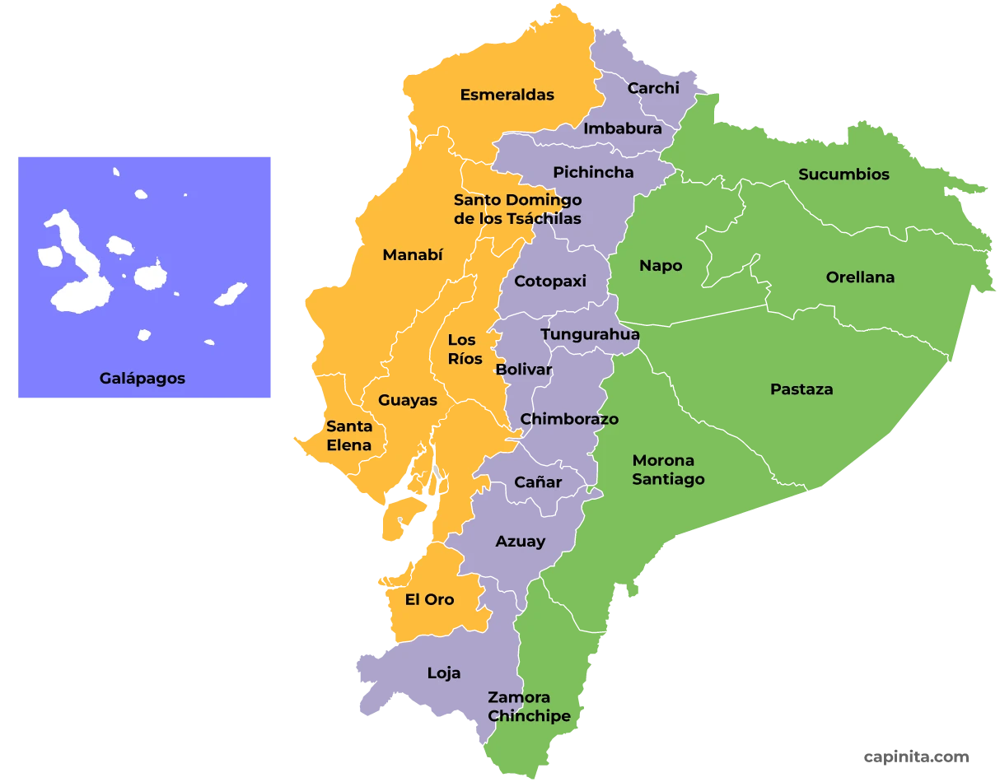

Objetivo general
Desarrollar un sistema básico que permita registrar números de cédula ecuatorianos e identificar la provincia relacionada con sus dos primeros dígitos.
Proyecto Integrador de Primer Nivel
Este proyecto permite registrar números de cédula ecuatorianos e identificar la provincia relacionada con sus dos primeros dígitos.
Muchas personas desconocen el significado de los dos primeros dígitos de una cédula ecuatoriana y su relación con los códigos provinciales.
Además, al registrar números de cédula de forma manual pueden presentarse errores como campos vacíos, datos incompletos, letras, códigos provinciales inexistentes o registros repetidos.
Por esta razón, se propone desarrollar un programa básico que permita registrar, consultar y eliminar cédulas, identificando la provincia correspondiente.
Desarrollar un sistema básico que permita registrar números de cédula ecuatorianos e identificar la provincia relacionada con sus dos primeros dígitos.
El usuario ingresa un número de cédula.
El programa comprueba que el dato tenga una estructura correcta.
Se obtienen los dos primeros dígitos de la cédula.
El código es comparado con la lista de provincias.
La cédula y la provincia son guardadas en el sistema.
Para registrar una cédula deben cumplirse las siguientes condiciones:
P ∧ Q ∧ R ∧ S ∧ T
Todas las condiciones deben ser verdaderas para guardar el registro.
Los dos primeros dígitos de la cédula son utilizados para identificar el código provincial.
| Código | Provincia |
|---|---|
| 01 | Azuay |
| 02 | Bolívar |
| 03 | Cañar |
| 04 | Carchi |
| 05 | Cotopaxi |
| 06 | Chimborazo |
| 07 | El Oro |
| 08 | Esmeraldas |
| 09 | Guayas |
| 10 | Imbabura |
| 11 | Loja |
| 12 | Los Ríos |
| 13 | Manabí |
| 14 | Morona Santiago |
| 15 | Napo |
| 16 | Pastaza |
| 17 | Pichincha |
| 18 | Tungurahua |
| 19 | Zamora Chinchipe |
| 20 | Galápagos |
| 21 | Sucumbíos |
| 22 | Orellana |
| 23 | Santo Domingo de los Tsáchilas |
| 24 | Santa Elena |

El mapa permite observar la ubicación de las provincias y relacionarlas con sus respectivos códigos.
La parte funcional del proyecto fue desarrollada mediante el lenguaje de programación Python.
El programa utiliza variables, condicionales, ciclos, listas, diccionarios, funciones y archivos para administrar los registros.
Permite ingresar una nueva cédula e identificar su provincia.
Muestra las cédulas que se encuentran registradas.
Permite buscar una cédula específica dentro del sistema.
Permite retirar una cédula de los registros.
El proyecto demuestra que es posible integrar conocimientos de comunicación, lógica matemática, programación y desarrollo web en una solución organizada.
Las validaciones permiten reducir errores durante el ingreso de información, mientras que las funciones facilitan la organización y reutilización del código.
La página web permite presentar el proyecto de forma clara, mientras que el programa en Python demuestra el funcionamiento práctico del sistema.
Alejandro Castellano
Josue Rivera